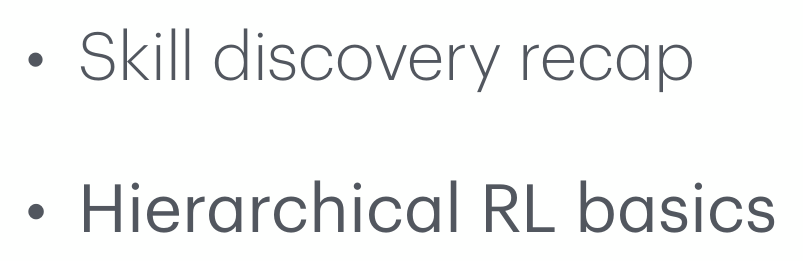
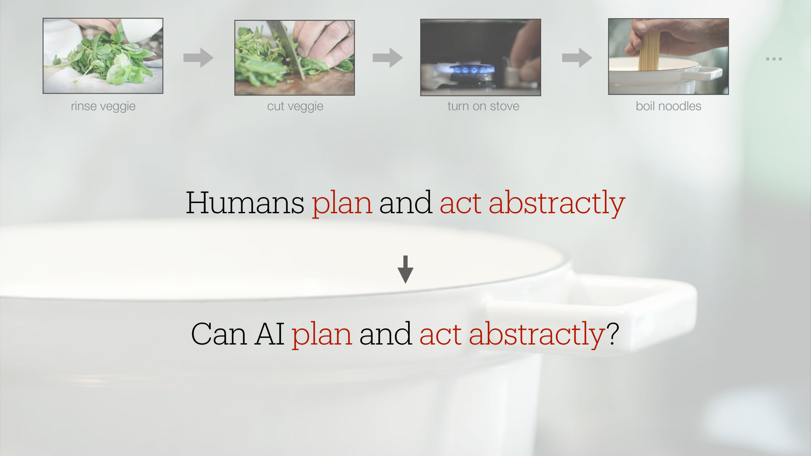
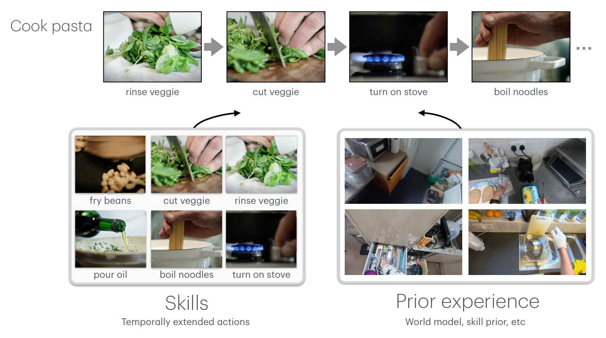
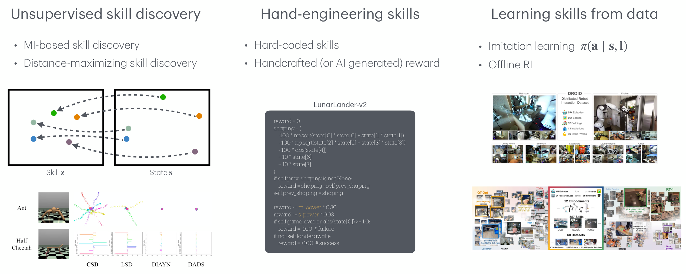
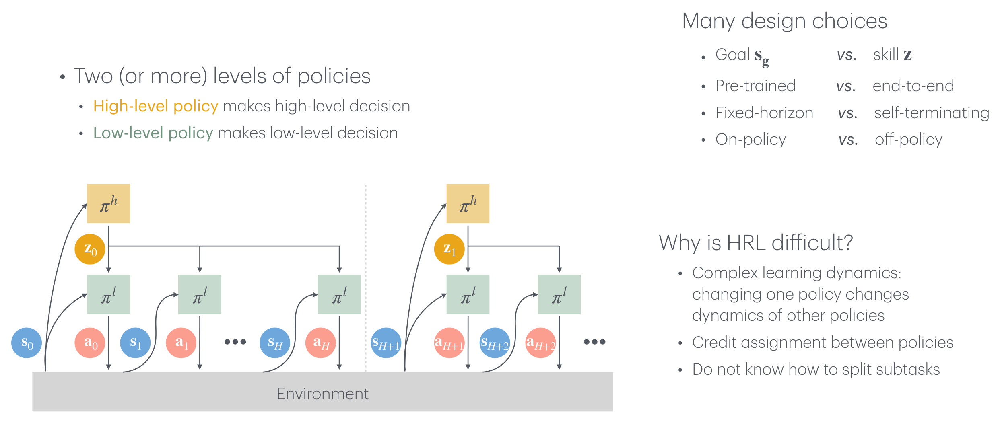
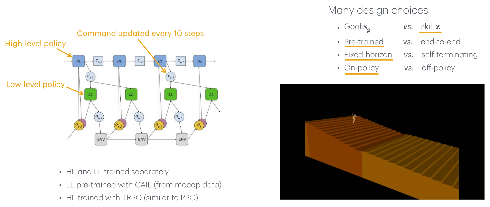
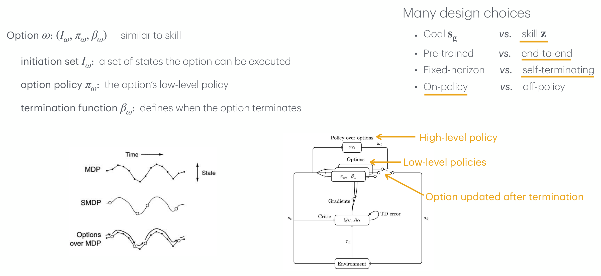
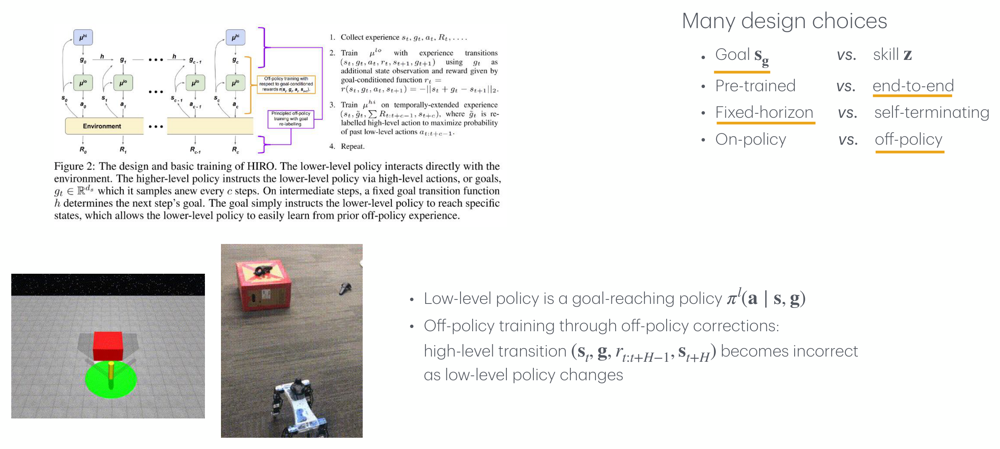
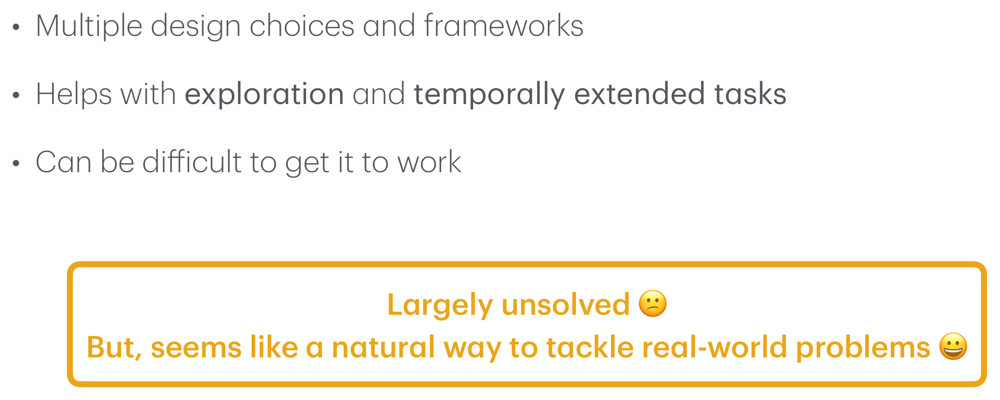

본 포스트는 Youngwoon Lee 교수님의 Deep Reinforcement Learning 강의 자료 중 Lecture 12-1 — Hierarchical RL #1 (총 27장)을 바탕으로, 강의를 처음 듣는 독자도 논리적 흐름을 따라갈 수 있도록 재구성한 것입니다. 앞 데크(Lecture 10-2 Skill discovery)는 15회차 포스트로 정리했고, 계층적 강화학습의 두 번째 데크(Lecture 12-2 Hierarchical RL #2)가 이 데크에 이어집니다. 이 데크는 계획 슬라이드(2쪽, 14쪽)에 적힌 대로 두 부분으로 나뉩니다. 앞부분 Skill discovery recap(3–13쪽)은 Lecture 10-2의 슬라이드 열한 장(13–17, 20, 22, 25, 26, 36, 40쪽)을 쪽 번호만 바꾸어 다시 실은 복습이어서 이 포스트에서는 다루지 않으며, 그 내용은 15회차 포스트의 10–26절에 정리되어 있습니다. 본문은 뒷부분 Hierarchical RL basics(14–27쪽)를 따릅니다. 원본 슬라이드는 영문으로 작성되어 있으며, 본문의 대섹션은 슬라이드 제목을 그대로 차용했습니다. 같은 제목의 두 계획 슬라이드(2쪽, 14쪽)는 1절로 묶어 14쪽을 실었습니다. 15–20쪽은 Goal: make pasta!라는 제목(15–16쪽에만 있고 17–20쪽에는 제목이 없습니다) 아래 이어지는 한 흐름이어서 2절로 묶었고, 하위 과제의 썸네일이 한 장씩 늘어나는 17–20쪽 가운데 완성된 20쪽을 15쪽의 사진과 함께 실었으며 16–19쪽은 글로만 다루었습니다. 슬라이드 하단의 출처 — 요리 영상 cinematic cooking | Spaghetti & Pesto (YouTube) · Heess et al., Learning and Transfer of Modulated Locomotor Controllers, arXiv 2016 · Merel et al., Learning human behaviors from motion capture by adversarial imitation, arXiv 2017 · Bacon et al., The Option-Critic Architecture, AAAI 2017 · Nachum et al., Data-Efficient Hierarchical Reinforcement Learning, NIPS 2018 — 는 해당 절의 본문에 옮겨 두었습니다. 본문의 대섹션 번호는 원본 슬라이드에 없는 것을 읽기 편하도록 붙인 것입니다.
한 줄 요약 (TL;DR)
“사람처럼 추상적으로 계획하고 행동하려면, 스킬을 고르는 상위 정책과 그 스킬을 여러 스텝 동안 실행하는 하위 정책으로 의사결정을 두 층으로 나눕니다.”
파스타를 만드는 일처럼 수많은 저수준 행동이 필요한 긴 지평의 과제도 사람은 “채소 씻기 → 채소 썰기 → 불 켜기 → 면 삶기”처럼 몇 개의 하위 과제로 계획합니다. 강의는 이 능력에 필요한 재료를 여러 스텝에 걸친 행동인 스킬과 사전 경험(세계 모형, 스킬 사전 분포 등)으로 나누고, 스킬은 비지도 스킬 발견·손으로 설계·데이터로부터 학습이라는 세 경로로 얻을 수 있다고 정리합니다. 얻은 스킬을 쓰는 틀이 계층적 강화학습으로, 상위 정책이 스킬 \(\mathbf{z}\)(또는 목표 \(\mathbf{s}_g\))를 고르면 하위 정책이 그것을 받아 여러 스텝의 행동을 내며, 무엇을 넘겨주는가·어떻게 학습하는가·언제 다시 고르는가·어떤 데이터로 학습하는가라는 네 가지 설계 선택이 따릅니다. 보행 제어기(사전학습한 하위 정책에 10스텝마다 명령), 옵션–비평가(종료 함수로 스스로 끝나는 옵션을 종단간 학습), HIRO(목표 도달 하위 정책과 목표 재지정을 이용한 오프폴리시 학습)가 그 조합의 세 사례이며, 한 정책의 학습이 다른 정책의 환경을 바꾸고 정책 사이의 신용 할당과 하위 과제의 분할이 어렵기 때문에 계층적 강화학습은 아직 대체로 풀리지 않은 문제로 남아 있습니다.
1. 오늘의 계획 (Plan for Today)
15회차는 환경 보상 없이 스킬 \(\mathbf{z}\)로 조건화된 정책 \(\pi(\mathbf{a} \mid \mathbf{s}, \mathbf{z})\)를 배우는 스킬 발견을 다루었습니다. 이번 데크는 그렇게 얻은 스킬을 어디에, 어떻게 쓰는가로 넘어갑니다. 계획 슬라이드는 두 줄입니다.
- Skill discovery recap (스킬 발견 복습)
- Hierarchical RL basics (계층적 강화학습 기초)
같은 슬라이드가 강의 맨 앞(2쪽)에서는 첫째 줄을, 복습이 끝난 뒤(14쪽)에서는 둘째 줄을 진하게 강조하며 두 번 나옵니다. 본문과의 대응은 다음과 같습니다.
| 항목 | 슬라이드 | 이 포스트 | 묻는 것 |
|---|---|---|---|
| Skill discovery recap | 3–13쪽 | 다루지 않음 (15회차 10–26절) | 보상 없이 어떻게 스킬을 배우는가 |
| Hierarchical RL basics | 15–27쪽 | 2–9절 | 배운 스킬로 긴 지평의 과제를 어떻게 푸는가 |

- 계층적 강화학습(hierarchical reinforcement learning, HRL): 정책을 상위 정책(high-level policy)과 하위 정책(low-level policy)으로 나누는 강화학습입니다(5절).
- 스킬(skill)과 스킬 정책 \(\pi(\mathbf{a} \mid \mathbf{s}, \mathbf{z})\)는 15회차의 용어를 그대로 씁니다. 옵션(option)은 7절에서 정의합니다.
- 긴 지평의 과제(long-horizon task): 끝내는 데 아주 많은 스텝이 필요한 과제입니다. 15회차 1절의 “짧은 지평의 행동”과 짝을 이루는 표현입니다.
- 시간적으로 확장된 행동(temporally extended action), 사전 경험(prior experience), 스킬 사전 분포(skill prior)는 3절에서 다룹니다. 세계 모형(world model)은 10–11회차의 번역을 따릅니다.
- 사전학습(pre-trained) 대 종단간(end-to-end), 고정 지평(fixed-horizon) 대 스스로 종료(self-terminating), 온폴리시 대 오프폴리시의 설계 선택은 5.3절에서 정리합니다.
- 탐색(exploration)과 신용 할당(credit assignment)은 앞 회차들과 같은 번역입니다.
2. 목표: 파스타 만들기! (Goal: Make Pasta!)
14쪽에서 계획 슬라이드가 둘째 줄을 강조하며 본론이 시작됩니다. 강의는 계층적 강화학습의 정의부터 꺼내지 않고, 요리 영상의 장면들로 문제를 먼저 보여 줍니다(영상 출처: cinematic cooking | Spaghetti & Pesto, https://www.youtube.com/watch?v=exXdcVE0nQA).
2.1 목표 하나만 주어진 과제
15쪽의 제목은 “Goal: make pasta!”(목표: 파스타 만들기!)입니다. 사진에는 재료와 도구가 모두 갖추어져 있지만, 무엇을 먼저 하고 그다음에 무엇을 해야 하는지는 어디에도 적혀 있지 않습니다.
- 에이전트에게 주어진 것이 이 목표 하나뿐이라면, 팔과 손가락을 어떻게 움직일지를 매 순간 정하는 수많은 저수준 행동 가운데 무엇이 목표에 다가가는지를 스스로 찾아내야 합니다.
- 파스타가 완성되기까지는 그런 행동이 아주 길게 이어져야 합니다. 이것이 이번 강의가 말하는 긴 지평의 과제입니다.
16쪽은 같은 제목 아래 완성된 페스토 스파게티 접시를 어둡게 깔고, 그 위에 한 문장을 띄웁니다.
Humans plan and act abstractly (사람은 추상적으로 계획하고 행동한다)
슬라이드는 이 문장에서 plan과 act abstractly만 빨간 글씨로 칠했습니다. 요리를 마친 사람이 무엇을 해냈는가가 아니라 어떻게 해냈는가 — 계획과 행동의 “추상성” — 가 이 문장의 초점이라는 뜻입니다.
2.2 사람은 하위 과제의 단위로 계획한다
17–20쪽은 영상의 장면을 배경으로 위쪽에 썸네일을 한 장씩 늘려 갑니다.
- rinse veggie (채소 씻기) — 17쪽
- cut veggie (채소 썰기) — 18쪽
- turn on stove (불 켜기) — 19쪽
- boil noodles (면 삶기) — 20쪽, 뒤에 말줄임표(…)
20쪽은 네 장면을 모두 놓은 뒤 16쪽의 문장을 다시 쓰고, 그 아래에 질문을 하나 더합니다. 이 순서가 16쪽 문장의 두 동사를 풀어 줍니다.
- 추상적으로 계획한다: 계획의 단위가 관절의 움직임이 아니라 하위 과제입니다. 파스타를 만들려는 사람은 손가락을 몇 도 굽힐지를 미리 계획하지 않고, 씻고 → 썰고 → 불을 켜고 → 면을 삶는 순서만 정합니다.
- 추상적으로 행동한다: 하위 과제 하나를 고르고 나면, 그것을 이루는 세세한 움직임은 하나하나 다시 계획하지 않아도 이어집니다. “채소 썰기”를 고른 뒤에 칼질 한 번 한 번을 새로 결정하지 않는 것과 같습니다.
Can AI plan and act abstractly? (AI도 추상적으로 계획하고 행동할 수 있을까?)
이 질문이 이번 강의 전체의 질문입니다. 지금까지 이 시리즈의 정책은 \(\pi(\mathbf{a} \mid \mathbf{s})\)처럼 매 스텝 저수준 행동 하나를 고르는 정책이었습니다. 이 포스트에서는 이런 정책을 계층이 없다는 뜻에서 평평한(flat) 정책이라 부르겠습니다. 평평한 정책에게 파스타는 몇 개의 하위 과제가 아니라 길게 이어지는 행동의 열입니다.

설명을 위해 과제가 \(K\)개의 하위 과제로 이루어지고, 하위 과제 하나에 저수준 행동이 대략 \(D\)번 필요하다고 가정해 보겠습니다.
- 결정의 수: 평평한 정책은 \(KD\)번 결정하지만, 하위 과제 단위로 계획하면 \(K\)번만 결정합니다.
- 신용 할당: 보상이 파스타가 완성되는 마지막에만 주어진다면, 평평한 정책은 그 보상이 \(KD\)번의 결정 가운데 어느 결정 덕분인지를 가려내야 하지만, 하위 과제 단위에서는 \(K\)번의 결정만 따지면 됩니다.
- 무작위 탐색: 매 스텝 \(n\)가지 행동 가운데 무작위로 고르는 에이전트가 정해진 행동 열 하나를 우연히 맞힐 확률은 \((1/n)^{KD}\)입니다. 하위 과제를 확실히 해내는 스킬이 \(m\)개 있고 그 가운데서 무작위로 고른다면 \((1/m)^{K}\)입니다. 지수가 \(KD\)에서 \(K\)로 줄어듭니다.
이 셈이 3절의 “스킬”과 5절의 “상위 정책”이 하는 일의 요지이며, 9절 요약의 “탐색과 시간적으로 확장된 과제에 도움이 된다”는 평가로 이어집니다.
3. 긴 지평의 과제는 어떻게 푸는가 (How to Solve Long-Horizon Tasks?)
21쪽은 2절의 질문을 강화학습의 언어로 옮깁니다. 위쪽 줄 Cook pasta(파스타 요리하기)는 2절의 하위 과제 넷을 화살표로 잇고, 그 아래에 이 줄을 떠받치는 두 재료를 놓습니다.
| 재료 | 부제 | 슬라이드의 그림 |
|---|---|---|
| Skills (스킬) | Temporally extended actions (시간적으로 확장된 행동) | 하위 과제 장면 여섯 개를 모은 스킬 목록 |
| Prior experience (사전 경험) | World model, skill prior, etc (세계 모형, 스킬 사전 분포 등) | 1인칭 시점에서 찍은 부엌 사진 네 장 |
두 상자에서 나온 화살표가 모두 위쪽의 과제 줄을 가리킵니다. 슬라이드는 두 재료의 이름과 예만 적고 따로 풀이하지 않으므로, 아래에서 각각이 무엇을 맡는지 풀어 보겠습니다.
3.1 스킬: 시간적으로 확장된 행동
- 강화학습의 행동 \(\mathbf{a}_t\)는 한 스텝에 끝납니다. 시간적으로 확장된 행동은 한 번 고르면 여러 스텝에 걸쳐 이어지는 행동입니다.
- 15회차의 스킬 정책 \(\pi(\mathbf{a} \mid \mathbf{s}, \mathbf{z})\)에 스킬 \(\mathbf{z}\)를 고정한 채 여러 스텝 실행하는 것이 바로 이것입니다. “채소 썰기”라는 스킬 하나를 고르면 칼질에 해당하는 저수준 행동들이 연달아 나옵니다.
- 슬라이드의 스킬 목록에는 fry beans(콩 볶기), cut veggie, rinse veggie, pour oil(기름 붓기), boil noodles, turn on stove 여섯 개가 과제와 다른 순서로 놓여 있고, 파스타 줄에 나오지 않는 콩 볶기와 기름 붓기도 섞여 있습니다. 목록에서 나온 화살표가 과제 줄을 가리키듯, 과제를 푼다는 것은 목록에서 알맞은 스킬을 골라 알맞은 순서로 잇는 일이 됩니다.
3.2 사전 경험: 무엇을 어떤 순서로 할지에 대한 지식
스킬이 있어도 다음에 어떤 스킬을 쓸지는 여전히 정해야 합니다. 스킬의 순서를 시행착오로만 찾는다면, 2절 끝의 셈대로 무작위로 맞힐 확률이 \((1/m)^K\)인 탐색이 여전히 남습니다. 사전 경험은 과거에 쌓인 데이터 — 슬라이드의 그림처럼 사람이 부엌에서 일하는 1인칭 장면 같은 것 — 에서 얻는 지식으로, 부제는 두 가지 예를 듭니다.
- 세계 모형(world model): 10–11회차에서 다룬, 행동의 결과로 다음 상태가 어떻게 될지를 예측하는 모형입니다. 스킬의 결과를 미리 내다볼 수 있다면 실제로 해 보지 않고도 스킬의 순서를 계획할 수 있습니다.
- 스킬 사전 분포(skill prior): 어떤 상태에서 어떤 스킬이 쓰일 법한지에 대한 분포입니다. 면을 삶기 전에 불을 켜는 것처럼 자주 함께 나오는 순서를 알면, 매번 고를 스킬의 후보가 크게 줄어듭니다.
부제 끝의 “등(etc)”은 사전 경험의 형태가 이 둘에 한정되지 않는다는 뜻입니다. 2절의 두 동사에 대응시켜 읽으면, 스킬은 추상적으로 행동하는 능력을, 사전 경험은 그 스킬들로 추상적으로 계획하는 능력을 뒷받침합니다. 이 데크의 나머지(4–9절)는 그 가운데 스킬 쪽 — 스킬을 어떻게 얻고, 얻은 스킬을 어떻게 쓰는가 — 을 다룹니다.

4. 스킬은 어떻게 얻는가 (How to Get Skills?)
22쪽은 스킬을 얻는 세 경로를 세 열로 나란히 놓습니다. 어느 경로를 거치든 결과는 스킬로 조건화된 정책, 곧 5절에서 하위 정책이 될 것입니다.

4.1 비지도 스킬 발견 (Unsupervised Skill Discovery)
첫째 경로는 15회차 전체의 주제입니다. 열의 두 불릿이 그 두 계열입니다.
- MI 기반 스킬 발견: 스킬과 상태의 상호 정보량을 최대화합니다(15회차 12–17절의 DIAYN).
- 거리 최대화 스킬 발견: 스킬이 스킬 표현의 공간에서 멀리 움직이도록 합니다(15회차 18–25절의 LSD·CSD·METRA).
열 위쪽 그림은 15회차 11절에서 본, 상태 \(\mathbf{s}\)를 스킬 표현 \(\mathbf{z} = \phi(\mathbf{s})\)로 옮기는 그림이고, 아래쪽은 15회차 23절에서 CSD의 보행 결과로 본 그림입니다. Ant에서 CSD의 궤적은 여러 방향으로 넓게 뻗고 LSD는 몇 방향으로 뻗는 반면 DIAYN과 DADS는 원점 근처에 머뭅니다. 같은 비지도 방법이라도 무엇을 최대화하느냐에 따라 얻는 스킬이 크게 다르다는 것을 한눈에 보여 줍니다.
- 장점: 보상도 시연도 필요 없습니다. 환경과 상호작용하기만 하면 됩니다.
- 한계: 15회차 16절의 단서대로, 지도 신호가 없으므로 발견한 스킬이 과제에 쓸모 있다는 보장은 없습니다.
4.2 손으로 설계한 스킬 (Hand-Engineering Skills)
둘째 경로는 사람이 스킬을 직접 만드는 것입니다.
- 하드코딩된 스킬(hard-coded skills): 스킬의 동작 자체를 사람이 프로그램으로 짭니다.
- 손으로(또는 AI가) 설계한 보상(handcrafted (or AI generated) reward): 스킬마다 보상 함수를 설계하고, 그 보상으로 강화학습을 돌려 스킬을 얻습니다. 보상 함수의 코드를 LLM이 쓰게 하는 방법은 13회차 21절(Eureka)에서 보았습니다.
슬라이드가 예로 든 코드는 13회차 3.2절에서 한 줄씩 읽은 LunarLander-v2의 보상입니다. 주석 가운데 # failure와 # success는 슬라이드에 있던 것이고 나머지는 이 포스트에서 붙인 것이며, 상태 성분의 의미는 gym의 LunarLander 구현을 따른 것으로 슬라이드에는 적혀 있지 않습니다.
reward = 0
shaping = (
-100 * np.sqrt(state[0] * state[0] + state[1] * state[1]) # 착륙 지점까지의 거리: 위치 (x, y)
- 100 * np.sqrt(state[2] * state[2] + state[3] * state[3]) # 속력: 속도 (v_x, v_y)
- 100 * abs(state[4]) # 기체가 기울어진 각도
+ 10 * state[6] # 첫째 다리가 땅에 닿았는가 (0 또는 1)
+ 10 * state[7] # 둘째 다리가 땅에 닿았는가 (0 또는 1)
)
if self.prev_shaping is not None:
reward = shaping - self.prev_shaping # 형성 항은 '이번 값 - 지난 값'으로 준다
self.prev_shaping = shaping
reward -= m_power * 0.30 # 주 엔진 연료 비용
reward -= s_power * 0.03 # 측면 엔진 연료 비용
if self.game_over or abs(state[0]) >= 1.0:
reward = -100 # failure
if not self.lander.awake:
reward = +100 # success착륙이라는 스킬 하나에 들어간 설계 결정을 세어 보면 다음과 같습니다.
- 형성 항 다섯 개와 그 가중치: 거리·속력·각도에 각각 \(-100\), 두 다리의 접지에 각각 \(+10\)
- 연료 비용 계수 두 개: 주 엔진 \(0.30\), 측면 엔진 \(0.03\)
- 종료 조건 두 가지와 그 보상: 실패(충돌하거나 화면 좌우 밖으로 나감)면 \(-100\), 성공(내려앉아 멈춤)이면 \(+100\)
이 숫자들은 모두 사람이 정한 것이고, 잘못 정하면 의도와 다른 행동이 학습될 수 있습니다. 이 경로로 파스타에 필요한 스킬을 마련하려면 씻기·썰기·불 켜기·삶기마다 이런 보상을 따로 설계해야 합니다. 원하는 행동을 겨냥해 만들 수 있다는 것이 이 경로의 장점이고, 스킬 하나하나에 드는 이 설계 비용이 한계입니다.
4.3 데이터로부터 스킬 배우기 (Learning Skills from Data)
셋째 경로는 이미 있는 데이터에서 스킬을 배우는 것입니다.
- 모방학습 \(\pi(\mathbf{a} \mid \mathbf{s}, \mathbf{l})\): 1회차의 모방학습입니다. 슬라이드는 \(\mathbf{l}\)이 무엇인지 따로 적지 않지만, 아래 데이터셋 그림의 과제들이 “pick green chip bag from counter”(조리대에서 초록 과자 봉지 집기)처럼 자연어 문장으로 적혀 있다는 점에서 언어 지시(language instruction)로 읽는 것이 자연스럽습니다. 그렇게 읽으면 이 정책은 15회차 스킬 정책의 \(\mathbf{z}\) 자리에 언어 지시를 넣은 것이고, 지시 하나가 스킬 하나에 해당합니다.
- 오프라인 강화학습(offline RL): 9회차의 주제로, 보상이 붙은 고정된 데이터셋에서 환경과 상호작용하지 않고 정책을 배웁니다.
열 아래의 두 그림은 1회차 6.7절에서 본 대규모 로봇 데이터셋입니다.
- DROID (Distributed Robot Interaction Dataset): 욕실·부엌·식당·침실·실험실·세탁실·사무실 같은 실제 공간에서 모은 데이터로, 65k 에피소드, 564개 장면, 52개 건물, 13개 기관, 86개 과제/동사를 담고 있습니다.
- Open X-Embodiment: 21개 기관 34개 연구실의 데이터셋 60개를 합친 것으로, 311개 장면에서 모은 1M 에피소드에 22가지 로봇 몸체(embodiment)와 pour·stack·route 같은 527개 스킬이 들어 있습니다. 그림 주위에는 QT-Opt, RT-1, Bridge, ALOHA처럼 합쳐진 데이터셋의 이름과 “set the bowl to the right side of the table” 같은 과제 문장이 흩어져 있습니다.
데이터에 담긴 행동은 실제 과제를 하면서 모인 것이므로 쓸모 있는 스킬이 들어 있을 가능성이 높습니다. 대신 이 경로는 그만한 데이터를 모으는 비용을 치러야 하고, 1회차 6.9절이 짚었듯 로봇 데이터는 아직 언어 데이터에 비해 규모가 훨씬 작습니다.
세 경로를 나란히 놓으면 다음과 같습니다.
| 경로 | 방법 | 필요한 것 | 이 시리즈에서 |
|---|---|---|---|
| 비지도 스킬 발견 | MI 기반, 거리 최대화 | 환경과의 상호작용만 (보상·시연 없음) | 15회차 |
| 손으로 설계 | 하드코딩, 손으로(또는 AI가) 설계한 보상 | 스킬마다 사람(또는 LLM)의 설계 | 13회차 3.2절·21절 |
| 데이터로부터 학습 | 모방학습, 오프라인 강화학습 | 시연이나 데이터셋 | 1회차, 9회차 |
5. 스킬은 어떻게 쓰는가: 계층적 강화학습 (How to Use Skills? “Hierarchical RL”)
23쪽의 제목은 질문 “How to use skills?” 옆에 큰 글씨의 답 “Hierarchical RL”(계층적 강화학습)을 나란히 붙입니다. 4절의 경로로 얻은 스킬을 쓰는 틀이 계층적 강화학습입니다.
5.1 두 단계의 정책
슬라이드 왼쪽 위의 불릿이 구조를 정의합니다.
- 정책을 두 단계(또는 그 이상)로 나눕니다(Two (or more) levels of policies).
- 상위 정책(high-level policy) \(\pi^h\)는 상위 결정 — 어떤 스킬을 쓸지 — 을 내립니다.
- 하위 정책(low-level policy) \(\pi^l\)은 하위 결정 — 매 스텝 어떤 행동을 할지 — 을 내립니다.
아래 그림이 두 정책이 번갈아 결정하는 방식을 보여 줍니다.
- 첫 구간에서 \(\pi^h\)는 상태 \(\mathbf{s}_0\)를 받아 스킬 \(\mathbf{z}_0\)를 고릅니다.
- \(\mathbf{z}_0\)는 가로선을 타고 그 구간의 모든 \(\pi^l\)에 전달됩니다. \(\pi^l\)은 \(\mathbf{s}_0, \mathbf{s}_1, \dots, \mathbf{s}_H\)를 차례로 받으면서 같은 \(\mathbf{z}_0\)를 유지한 채 \(\mathbf{a}_0, \mathbf{a}_1, \dots, \mathbf{a}_H\)를 냅니다.
- 회색 점선 뒤의 둘째 구간에서 \(\pi^h\)는 \(\mathbf{s}_{H+1}\)을 받아 새 스킬 \(\mathbf{z}_1\)을 고르고, \(\pi^l\)이 \(\mathbf{a}_{H+1}, \mathbf{a}_{H+2}, \dots\)를 이어 갑니다.
\(k\)번째 구간이 시각 \(t_k\)에 시작한다고 하면, 상위 정책은 구간의 첫 상태를 보고 스킬을 한 번 고르고, 하위 정책은 구간이 끝날 때까지 그 스킬을 유지한 채 매 스텝 행동을 고릅니다.
\[ \mathbf{z}_k \sim \pi^h(\cdot \mid \mathbf{s}_{t_k}), \qquad \mathbf{a}_t \sim \pi^l(\cdot \mid \mathbf{s}_t, \mathbf{z}_k) \quad (t_k \le t < t_{k+1}) \]
그림처럼 한 구간이 \(H+1\)스텝으로 고정되어 있으면 \(t_k = k(H+1)\)이고, 첫 구간의 행동은 \(\mathbf{a}_0, \dots, \mathbf{a}_H\), 둘째 구간은 \(\mathbf{a}_{H+1}\)부터입니다.
5.2 상위 정책이 보는 문제
상위 정책의 자리에 서서 보면, 계층적 강화학습은 스킬을 행동으로 삼는 또 하나의 강화학습 문제입니다. 그 문제의 세 요소를 차례로 적어 보겠습니다.
① 행동은 스킬 \(\mathbf{z}_k\)입니다. 상위 정책은 매 스텝이 아니라 구간마다 한 번 결정합니다.
② 전이는 구간의 첫 상태 \(\mathbf{s}_{t_k}\)에서 다음 구간의 첫 상태 \(\mathbf{s}_{t_{k+1}}\)로 가는 확률입니다. 구간 안의 한 경로 — 행동 \(\mathbf{a}_{t_k}, \dots, \mathbf{a}_{t_{k+1}-1}\)과 중간 상태 \(\mathbf{s}_{t_k+1}, \dots, \mathbf{s}_{t_{k+1}-1}\) — 가 나올 확률은 3회차 3.2절의 궤적 분포처럼 매 스텝의 정책과 동역학을 곱한 것이고, 그 행동과 중간 상태를 모두 적분해 없애면 시작과 끝 상태만 남습니다.
\[ p^h(\mathbf{s}_{t_{k+1}} \mid \mathbf{s}_{t_k}, \mathbf{z}_k) = \int \prod_{t=t_k}^{t_{k+1}-1} \pi^l(\mathbf{a}_t \mid \mathbf{s}_t, \mathbf{z}_k)\, p(\mathbf{s}_{t+1} \mid \mathbf{s}_t, \mathbf{a}_t) \; d\mathbf{a}\, d\mathbf{s} \]
여기서 \(d\mathbf{a}\, d\mathbf{s}\)는 구간 안의 모든 행동과 중간 상태에 대한 적분을 줄여 쓴 것입니다.
③ 보상은 구간 동안 모은 보상의 합입니다.
\[ R^h_k = \sum_{t=t_k}^{t_{k+1}-1} r(\mathbf{s}_t, \mathbf{a}_t) \]
할인이 없다고 두면 모든 구간의 \(R^h_k\)를 더한 것은 에피소드 전체의 보상 합과 같습니다. 따라서 \(\pi^l\)을 고정하면, 상위 정책이 자기 문제의 반환값을 최대화하는 것은 그 \(\pi^l\) 아래에서 원래 과제의 목적함수를 최대화하는 것과 같습니다. 달라진 것은 지평입니다. 에피소드가 \(T\)스텝이면 상위 정책은 약 \(T/(H+1)\)번만 결정하므로, 2절 끝의 셈에서 본 \(KD\)와 \(K\)의 차이가 바로 여기서 생깁니다.
그런데 ②의 식을 다시 보면 하위 정책 \(\pi^l\)이 상위 정책의 전이 확률 안에 들어 있습니다. 상위 정책에게 하위 정책은 환경의 일부입니다. 이 한 줄이 5.4절의 첫 번째 어려움과 8절의 HIRO가 푸는 문제의 출발점입니다.
5.3 여러 가지 설계 선택
슬라이드 오른쪽 위의 “Many design choices”는 계층적 강화학습을 만들 때 정해야 할 네 가지를 짝으로 나열합니다.
| 설계 선택 | 한쪽 | 다른 쪽 | 갈리는 지점 |
|---|---|---|---|
| Goal \(\mathbf{s}_g\) vs. skill \(\mathbf{z}\) | 상위 정책이 도달할 목표 상태 \(\mathbf{s}_g\)를 넘긴다. 하위 정책은 목표 조건부 정책이다 | 상위 정책이 스킬 벡터 \(\mathbf{z}\)를 넘긴다. 하위 정책은 스킬 정책이다 | 상위 정책의 출력이 상태 공간에 있는가, 잠재 공간에 있는가 |
| Pre-trained vs. end-to-end | 하위 정책을 먼저 따로 학습해 두고 상위 정책을 학습한다 | 두 정책을 함께 학습한다 (종단간) | 상위 정책을 학습하는 동안 하위 정책이 바뀌는가 |
| Fixed-horizon vs. self-terminating | 정해진 스텝 수마다 상위 정책이 다시 고른다 | 스킬이 언제 끝날지를 스스로 정한다 | 구간의 길이 \(t_{k+1} - t_k\)가 고정인가 |
| On-policy vs. off-policy | 현재 정책이 모은 데이터로만 학습한다 (3회차 8.2절, 5회차) | 재생 버퍼의 과거 데이터도 다시 쓴다 (7회차) | 지난 데이터를 다시 쓸 수 있는가 |
첫 줄의 두 선택은 15회차 11.3절에서 이미 만났습니다. 스킬 정책의 \(\mathbf{z}\) 자리에 목표 상태의 표현 \(\phi(\mathbf{s}_g)\)를 넣으면 목표 조건부 강화학습(9회차 12.3절)이 된다는 주석이었습니다. 계층적 강화학습에서는 그 자리를 상위 정책이 채우므로, 상위 정책이 상태 공간의 한 점을 지목하느냐 잠재 공간의 한 점을 지목하느냐가 갈립니다. 6–8절의 세 사례 슬라이드는 오른쪽 위의 같은 목록에서 그 사례의 선택에 주황 밑줄을 그어 표시합니다(9.1절의 표에 모았습니다).
5.4 계층적 강화학습은 왜 어려운가
슬라이드 오른쪽 아래의 “Why is HRL difficult?”는 세 가지를 듭니다.
- 복잡한 학습 동역학 (Complex learning dynamics): “한 정책을 바꾸면 다른 정책들의 동역학이 바뀝니다.” 5.2절의 \(p^h\) 안에 \(\pi^l\)이 들어 있으므로, 하위 정책이 학습으로 바뀌면 상위 정책이 같은 스킬 \(\mathbf{z}\)를 골라도 다른 곳에 도착하고 다른 보상을 받습니다. 거꾸로 하위 정책에게 어떤 스킬이 얼마나 자주 주어지는지는 상위 정책이 정하므로, 상위 정책이 바뀌면 하위 정책이 연습하는 스킬의 분포도 바뀝니다. 두 정책이 서로에게 움직이는 과녁이 됩니다.
- 정책 사이의 신용 할당 (Credit assignment between policies): 과제에 실패했을 때, 상위 정책이 스킬을 잘못 골랐기 때문인지 하위 정책이 고른 스킬을 제대로 실행하지 못했기 때문인지는 보상만으로 가려지지 않습니다. 6회차와 8회차에서 본 신용 할당이 시간 축의 문제였다면, 여기에는 정책 사이라는 축이 하나 더 생깁니다.
- 하위 과제를 어떻게 나눌지 모른다 (Do not know how to split subtasks): 2절의 “씻기 → 썰기 → …” 같은 분할은 사람에게는 당연하지만 에이전트에게는 주어지지 않습니다. 어떤 하위 과제가 있어야 하는지, 스킬 하나가 어디서 끝나야 하는지를 모르는 채로 학습해야 합니다. 5.3절의 “고정 지평 대 스스로 종료”는 이 가운데 “어디서 끝나는가”를 설계자가 정할지 학습에 맡길지의 선택이기도 합니다.
평평한 강화학습은 환경의 동역학 \(p(\mathbf{s}' \mid \mathbf{s}, \mathbf{a})\)가 학습 내내 고정되어 있다고 전제합니다. 계층적 강화학습의 상위 정책은 이 전제를 누리지 못합니다. 하위 정책이 바뀌는 한 \(p^h\)도 바뀌고, 재생 버퍼에 쌓아 둔 상위 수준의 경험은 지금의 “환경”이 아니라 과거의 하위 정책을 묘사하게 됩니다. 6절의 사례는 하위 정책을 미리 학습해 고정함으로써 이 문제를 피하고, 8절의 HIRO는 낡은 경험을 고쳐 써서 이 문제를 정면으로 다룹니다.

6. 예 1: 보행 제어기 학습 (EX #1: Learning Locomotor Controllers)
첫 사례는 사람 모양 캐릭터의 보행입니다(출처: Heess et al., Learning and Transfer of Modulated Locomotor Controllers, arXiv 2016; Merel et al., Learning human behaviors from motion capture by adversarial imitation, arXiv 2017). 슬라이드는 두 연구를 함께 묶어 하나의 사례로 소개합니다.
6.1 그림 읽기
슬라이드 왼쪽의 그림은 5.1절의 구조를 이 사례의 기호로 다시 그린 것입니다.
- HL (파란 상자): 상위 정책입니다. HL 상자는 매 시각(\(t-3, t-2, t-1, t\)) 그려져 있고, 사이의 연한 파란 상자 \(z_{t-3}, z_{t-2}, z_{t-1}\)을 거쳐 가로로 이어집니다. 상위 정책이 시각마다 다음 시각으로 넘겨주는 내부의 값으로 보이며, 슬라이드는 이 \(z\)를 따로 설명하지 않습니다.
- 명령 \(c\) (연한 파란 원): \(t-3\)과 \(t-1\)의 HL만 아래로 명령 \(c_{t-3}, c_{t-1}\)을 내보냅니다. 각 명령은 같은 시각의 LL과 다음 시각의 LL 모두에 전달되어, 한 번 낸 명령이 몇 스텝 동안 유지된다는 것을 보여 줍니다. 그림은 두 스텝마다 명령이 나오도록 그려져 있고, 주황 주석은 실제로는 명령이 10스텝마다 갱신된다(Command updated every 10 steps)고 적습니다.
- LL (초록 상자): 하위 정책입니다. 명령 \(c\)와 관측 \(o\)를 받아 행동 \(a\)를 내고, 행동은 회색 상자 ENV(환경)로 들어가 다음 관측을 만듭니다.
- 관측 \(o\): 노란 원 뒤에 분홍 원이 겹친 모양입니다. 관측에서 HL로는 선 두 개가, LL로는 선 하나가 올라가 상위 정책이 하위 정책보다 많은 관측을 받는 것처럼 그려져 있지만, 슬라이드는 두 원이 무엇을 뜻하는지 설명하지 않습니다.
이 그림에서 5.1절의 스킬 \(\mathbf{z}\) 자리에 오는 것은 HL이 LL에 넘기는 명령 \(c\)입니다. 그림의 \(z\) 상자는 HL 사이를 잇는 값이므로 23쪽의 스킬 \(\mathbf{z}\)와 혼동하지 않도록 주의해야 합니다.
6.2 따로, 순서대로 학습한다
아래의 세 불릿이 학습 방법을 요약합니다.
- HL과 LL은 따로 학습합니다 (HL and LL trained separately).
- LL은 모션 캡처(mocap) 데이터로 GAIL을 써서 사전학습합니다 (LL pre-trained with GAIL). GAIL은 13회차 8절에서 본 방법으로, 판별기가 시연과 정책의 움직임을 구별하지 못하도록 정책을 학습시킵니다. 모션 캡처는 사람 몸의 자세를 시간에 따라 기록한 데이터로, 13회차 11절에서 본 모션 클립과 같은 종류입니다. 그 결과 LL은 사람의 움직임을 닮은 보행 스킬이 됩니다.
- HL은 TRPO로 학습합니다 (HL trained with TRPO). 슬라이드는 괄호 안에 “PPO와 비슷하다(similar to PPO)”고 덧붙입니다. 5회차 12.2절에서 보았듯 TRPO는 새 정책과 옛 정책 사이의 KL 발산을 제약해 두 정책을 가깝게 묶어 두는 방법이고, PPO는 그 제약을 확률비 클리핑으로 단순화한 것입니다.
슬라이드 오른쪽 아래 사진은 검은 배경 속, 가로 줄무늬가 반복되는 주황색의 긴 지형 위를 걷는 사람 모양 캐릭터입니다. 슬라이드는 이 장면을 따로 설명하지 않지만, 하위 정책의 보행 스킬을 상위 정책이 조종해 지형을 지나가는 이 사례의 과제를 보여 주는 것으로 보입니다.
6.3 이 사례의 설계 선택
오른쪽 위 목록에서 주황 밑줄이 그어진 선택은 skill \(\mathbf{z}\), Pre-trained, Fixed-horizon, On-policy입니다.
- 스킬: HL이 LL에 넘기는 것은 도달할 상태가 아니라 명령 \(c\), 곧 잠재 공간의 값입니다.
- 사전학습: LL을 먼저 GAIL로 학습해 두고 그다음에 HL을 학습합니다.
- 고정 지평: 명령은 10스텝마다 갱신됩니다.
- 온폴리시: HL을 학습하는 TRPO는 현재 정책이 모은 데이터로 갱신하는 온폴리시 방법입니다(3회차, 5회차).
HL을 학습하는 동안 LL이 고정되어 있으면 5.2절의 \(p^h\)도 고정됩니다. HL에게 남는 것은 명령을 행동으로 삼고 지평이 10분의 1로 줄어든 평범한 강화학습 문제이고, 그래서 5회차의 TRPO·PPO 같은 평평한 알고리즘을 그대로 쓸 수 있습니다. 대신 HL은 LL이 사전학습에서 배운 움직임의 범위 안에서만 조종할 수 있습니다. 모션 캡처에 없던 움직임이 과제에 필요해도 LL은 그 자리에서 새로 배우지 않습니다.

7. 예 2: 옵션–비평가 (EX #2: Option-Critic)
둘째 사례는 스킬이 언제 끝날지를 스스로 배우는 구조입니다(출처: Bacon et al., The Option-Critic Architecture, AAAI 2017).
7.1 옵션
옵션 \(\omega\)는 세 요소의 묶음 \((I_\omega, \pi_\omega, \beta_\omega)\)이며, 슬라이드는 “스킬과 비슷하다(similar to skill)”고 덧붙입니다.
- 개시 집합(initiation set) \(I_\omega\): 옵션을 실행할 수 있는 상태의 집합입니다.
- 옵션 정책(option policy) \(\pi_\omega\): 옵션이 실행되는 동안 행동을 고르는, 옵션의 하위 정책입니다.
- 종료 함수(termination function) \(\beta_\omega\): 옵션이 언제 끝나는지를 정합니다. 보통 상태 \(\mathbf{s}\)마다 옵션이 그 자리에서 끝날 확률 \(\beta_\omega(\mathbf{s})\)로 둡니다.
옵션은 다음과 같이 실행됩니다.
- 실행 중인 옵션이 없으면, 상위 정책 — 옵션–비평가에서는 옵션 위의 정책(policy over options) \(\pi_\Omega\) — 이 현재 상태가 개시 집합에 들어 있는 옵션 가운데 하나를 고릅니다. 다만 옵션–비평가 논문은 모든 옵션을 모든 상태에서 쓸 수 있다고, 곧 개시 집합이 상태 공간 전체라고 가정합니다.
- 고른 옵션의 정책 \(\pi_\omega\)가 매 스텝 행동을 냅니다.
- 새 상태 \(\mathbf{s}'\)에 도착할 때마다 확률 \(\beta_\omega(\mathbf{s}')\)로 옵션이 끝나고, 끝나면 1로 돌아갑니다.
5.1절의 기호와 대응시키면 옵션의 번호 \(\omega\)가 스킬 \(\mathbf{z}\)의 자리에, \(\pi_\omega\)가 하위 정책 \(\pi^l(\cdot \mid \cdot, \mathbf{z})\)의 자리에, \(\pi_\Omega\)가 상위 정책 \(\pi^h\)의 자리에 옵니다. 다른 점은 구간의 길이입니다. 23쪽 그림(5.1절)에서는 구간의 길이 \(t_{k+1} - t_k\)가 정해져 있었지만, 옵션에서는 종료 함수가 매 스텝 끝낼지를 정하므로 구간의 길이가 상태에 따라 달라집니다.
7.2 MDP, SMDP, 그리고 MDP 위의 옵션
슬라이드 왼쪽 아래 그림은 가로축이 시간, 세로축이 상태인 세 줄의 궤적으로 세 가지 결정 과정을 비교합니다.
- MDP: 일정한 간격의 검은 점마다 결정이 일어나고, 상태는 한 스텝씩 바뀝니다(2회차 3.5절).
- SMDP (준마르코프 결정 과정, semi-Markov decision process): 결정 시점(흰 원) 사이의 간격이 일정하지 않고, 그 사이의 상태 변화는 매끄러운 곡선으로 그려져 있습니다. 한 번 내린 결정이 일정하지 않은 시간 동안 이어지는 결정 과정입니다.
- MDP 위의 옵션 (Options over MDP): MDP의 매 스텝(검은 점)을 그대로 둔 채, 여러 스텝을 묶은 굵은 화살표(옵션)를 그 위에 겹치고 옵션이 바뀌는 지점을 흰 원으로 표시했습니다.
셋째 줄이 옵션의 요점입니다. 옵션 단위로 보면 결정 사이의 간격이 일정하지 않은 SMDP이고, 스텝 단위로 보면 원래의 MDP입니다. 2절의 “추상적으로 계획하고 행동한다”가 같은 과정을 두 시간 단위로 겹쳐 보는 일로 형식화된 것입니다.
7.3 옵션–비평가 구조
슬라이드 오른쪽 아래의 구조도는 옵션을 어떻게 학습하는지를 보여 줍니다.
- 맨 위의 옵션 위의 정책 \(\pi_\Omega\)(주황 주석: 상위 정책)가 상태 \(s_t\)를 보고 옵션 \(\omega_t\)를 고릅니다.
- 그 아래 겹쳐 쌓인 옵션 상자들 \(\pi_\omega, \beta_\omega\)(주황 주석: 하위 정책들)가 상태 \(s_t\)를 받습니다. 오른쪽의 스위치 기호가 그 가운데 실행 중인 옵션 하나의 출력만 행동 \(a_t\)로 내보내며, 주황 주석은 옵션이 종료된 뒤에야 바뀐다(Option updated after termination)고 적습니다.
- 행동은 환경으로 들어가고, 환경이 돌려준 보상 \(r_t\)와 상태 \(s_t\)를 받는 비평가(Critic) \(Q_U, A_\Omega\)가 자기 자신으로 돌아오는 TD 오차 고리로 학습하면서 옵션들에 경사(Gradients)를 보냅니다. 4회차의 행위자–비평가에서 행위자 자리에 옵션이 들어간 모양입니다.
슬라이드에는 비평가의 두 기호 \(Q_U, A_\Omega\)가 이름만 적혀 있습니다. 아래 정의는 원 논문(Bacon et al., 2017)을 따른 것입니다.
\[ \begin{aligned} Q_\Omega(\mathbf{s}, \omega) &= \sum_{\mathbf{a}} \pi_\omega(\mathbf{a} \mid \mathbf{s})\, Q_U(\mathbf{s}, \omega, \mathbf{a}) \\ Q_U(\mathbf{s}, \omega, \mathbf{a}) &= r(\mathbf{s}, \mathbf{a}) + \gamma \sum_{\mathbf{s}'} p(\mathbf{s}' \mid \mathbf{s}, \mathbf{a})\, U(\omega, \mathbf{s}') \\ U(\omega, \mathbf{s}') &= \big(1 - \beta_\omega(\mathbf{s}')\big)\, Q_\Omega(\mathbf{s}', \omega) + \beta_\omega(\mathbf{s}')\, V_\Omega(\mathbf{s}') \\ V_\Omega(\mathbf{s}) &= \sum_{\omega} \pi_\Omega(\omega \mid \mathbf{s})\, Q_\Omega(\mathbf{s}, \omega) \\ A_\Omega(\mathbf{s}, \omega) &= Q_\Omega(\mathbf{s}, \omega) - V_\Omega(\mathbf{s}) \end{aligned} \]
- \(Q_\Omega(\mathbf{s}, \omega)\): 상태 \(\mathbf{s}\)에서 옵션 \(\omega\)를 실행할 때의 가치입니다.
- \(Q_U(\mathbf{s}, \omega, \mathbf{a})\): 옵션 \(\omega\)를 실행하는 중에 상태 \(\mathbf{s}\)에서 행동 \(\mathbf{a}\)를 했을 때의 가치입니다.
- \(U(\omega, \mathbf{s}')\): 옵션 \(\omega\)를 쥔 채 다음 상태 \(\mathbf{s}'\)에 도착했을 때의 가치로, 옵션을 계속하면 \(Q_\Omega(\mathbf{s}', \omega)\), 끝내고 새로 고르면 \(V_\Omega(\mathbf{s}')\)를 종료 확률로 섞은 것입니다.
- \(A_\Omega(\mathbf{s}, \omega)\): 옵션 \(\omega\)가 그 상태에서 옵션을 새로 고를 때의 평균보다 얼마나 나은지를 재는 옵션 수준의 이점입니다.
옵션 정책 \(\pi_\omega\)는 \(Q_U\)를 비평가로 삼아 행위자–비평가처럼 개선되고, 종료 함수 \(\beta_\omega\)는 \(A_\Omega\)를 이용해 개선됩니다. 종료 함수가 무엇을 배우는지는 \(U\)의 정의를 한 줄 정리하면 바로 보입니다.
\[ \begin{aligned} U(\omega, \mathbf{s}') &= Q_\Omega(\mathbf{s}', \omega) - \beta_\omega(\mathbf{s}') \big( Q_\Omega(\mathbf{s}', \omega) - V_\Omega(\mathbf{s}') \big) \\ &= Q_\Omega(\mathbf{s}', \omega) - \beta_\omega(\mathbf{s}')\, A_\Omega(\mathbf{s}', \omega) \end{aligned} \]
따라서 \(Q_\Omega\)와 \(V_\Omega\)를 그대로 둔 채 종료 확률만 조금 바꿀 때 가치가 변하는 방향은
\[ \frac{\partial U(\omega, \mathbf{s}')}{\partial \beta_\omega(\mathbf{s}')} = -A_\Omega(\mathbf{s}', \omega) \]
입니다. 이것은 종료 확률이 바로 그 상태의 \(U\)에 주는 직접 효과입니다. 원 논문은 종료 함수의 매개변수가 이후에 방문할 상태들의 가치에 미치는 영향까지 따져, 이 항을 앞으로 방문할 상태–옵션 쌍들에 대해 할인된 방문 빈도로 가중해 더한 꼴로 종료 함수의 경사를 유도합니다. 가중치는 0 이상이므로 아래의 부호 해석은 그대로 성립합니다.
- \(A_\Omega(\mathbf{s}', \omega) < 0\): 지금 옵션을 계속하는 것이 새로 고르는 것보다 못한 상태입니다. 종료 확률을 높일수록 가치가 커지므로, 이런 상태에서는 옵션이 끝나는 쪽으로 학습됩니다.
- \(A_\Omega(\mathbf{s}', \omega) > 0\): 지금 옵션이 평균보다 나은 상태입니다. 종료 확률을 낮추어 옵션을 이어 가는 쪽으로 학습됩니다.
종료 함수는 이렇게 “이 옵션이 아직 쓸모 있는가”를 상태마다 배우고, 그 결과 각 옵션이 언제 끝날지를 스스로 정하게 됩니다.
7.4 이 사례의 설계 선택
오른쪽 위 목록에서 주황 밑줄이 그어진 선택은 skill \(\mathbf{z}\), end-to-end, self-terminating, On-policy입니다.
- 스킬: 상위 정책이 넘기는 것은 목표 상태가 아니라 옵션의 번호 \(\omega\)입니다. 옵션 하나가 스킬 하나입니다.
- 종단간: 옵션 정책과 종료 함수가 비평가와 함께, 과제를 푸는 동안 한꺼번에 학습됩니다. 6절처럼 하위 정책을 미리 만들어 두지 않습니다.
- 스스로 종료: 구간의 길이를 종료 함수 \(\beta_\omega\)가 정합니다.
- 온폴리시: 옵션 정책과 종료 함수를 지금 실행 중인 옵션이 만든 경험으로 갱신합니다.

8. 예 3: HIRO (EX #3: HIRO)
셋째 사례는 상위 정책이 스킬 벡터 대신 상태 공간의 목표를 넘기고, 오프폴리시로 학습하는 구조입니다(출처: Nachum et al., Data-Efficient Hierarchical Reinforcement Learning, NIPS 2018). 슬라이드 왼쪽 위의 그림과 설명은 원 논문의 Figure 2를 그대로 옮긴 것입니다.
8.1 목표 도달 하위 정책
- 하위 정책은 목표 도달 정책 \(\pi^l(\mathbf{a} \mid \mathbf{s}, \mathbf{g})\)입니다 (Low-level policy is a goal-reaching policy). 상위 정책이 목표 \(\mathbf{g}\)를 내면, 하위 정책은 그 목표가 가리키는 상태에 도달하려고 행동합니다. 아래에서 보듯 HIRO의 목표는 현재 상태에서의 변위여서, 겨냥하는 상태는 \(\mathbf{s}_t + \mathbf{g}_t\)입니다.
- 그림 설명에 따르면 상위 정책은 목표 \(\mathbf{g}_t \in \mathbb{R}^{d_s}\) — 상태와 같은 \(d_s\)차원의 벡터 — 를 \(c\)스텝마다 새로 뽑고, 그 사이의 스텝에서는 고정된 목표 전이 함수 \(h\)가 다음 스텝의 목표를 정합니다.
하위 정책의 보상은 그림 오른쪽의 2단계에 적혀 있습니다.
\[ r_t = r(\mathbf{s}_t, \mathbf{g}_t, \mathbf{a}_t, \mathbf{s}_{t+1}) = -\lVert \mathbf{s}_t + \mathbf{g}_t - \mathbf{s}_{t+1} \rVert_2 \]
이 식은 목표가 상대 좌표라는 것을 말해 줍니다. \(\mathbf{g}_t\)는 “지금 상태에서 이만큼 옮겨 가라”는 변위이고, 겨냥하는 절대 위치는 \(\mathbf{s}_t + \mathbf{g}_t\)이며, 보상은 그 위치와 실제로 도착한 \(\mathbf{s}_{t+1}\) 사이의 유클리드 거리에 음수를 붙인 것입니다.
목표가 상대 좌표이면 상태가 바뀔 때마다 목표도 고쳐 써야 같은 지점을 가리킬 수 있습니다. 겨냥하는 절대 위치를 한 스텝 뒤에도 그대로 두려면 \(\mathbf{s}_{t+1} + \mathbf{g}_{t+1} = \mathbf{s}_t + \mathbf{g}_t\)여야 하므로
\[ \mathbf{g}_{t+1} = h(\mathbf{s}_t, \mathbf{g}_t, \mathbf{s}_{t+1}) = \mathbf{s}_t + \mathbf{g}_t - \mathbf{s}_{t+1} \]
이 됩니다. 원 논문이 쓰는 목표 전이 함수가 이 식입니다. 상위 정책이 \(c\)스텝마다 한 번 정한 목표 지점이 그 사이에 흔들리지 않게 하는 장치입니다.
8.2 HIRO의 학습 절차
그림 오른쪽의 네 단계가 학습 절차입니다.
- 경험 \(\mathbf{s}_t, \mathbf{g}_t, \mathbf{a}_t, R_t, \dots\)를 모은다.
- 전이 \((\mathbf{s}_t, \mathbf{g}_t, \mathbf{a}_t, r_t, \mathbf{s}_{t+1}, \mathbf{g}_{t+1})\)로 하위 정책 \(\mu^{lo}\)를 학습한다. 목표 \(\mathbf{g}_t\)는 상태 관측에 덧붙인 입력으로 쓰고, 보상은 목표 조건부 함수 \(r_t = r(\mathbf{s}_t, \mathbf{g}_t, \mathbf{a}_t, \mathbf{s}_{t+1}) = -\lVert \mathbf{s}_t + \mathbf{g}_t - \mathbf{s}_{t+1} \rVert_2\)로 준다.
- 시간적으로 확장된 경험 \((\mathbf{s}_t, \tilde{\mathbf{g}}_t, \sum R_{t:t+c-1}, \mathbf{s}_{t+c})\)로 상위 정책 \(\mu^{hi}\)를 학습한다. 여기서 \(\tilde{\mathbf{g}}_t\)는 과거의 하위 행동 \(\mathbf{a}_{t:t+c-1}\)의 확률을 최대화하도록 다시 붙인(re-labelled) 상위 행동이다.
- 반복한다.
두 정책의 학습을 하나씩 보겠습니다.
- 하위 정책 (2단계, 그림의 주황 괄호): 목표를 상태의 일부로 보면, 하위 정책의 “상태”는 \((\mathbf{s}_t, \mathbf{g}_t)\)이고 다음 “상태”는 \((\mathbf{s}_{t+1}, \mathbf{g}_{t+1})\)입니다. 전이 튜플에 다음 목표 \(\mathbf{g}_{t+1}\)이 들어 있는 이유입니다. 보상 \(r_t\)는 \((\mathbf{s}_t, \mathbf{g}_t, \mathbf{s}_{t+1})\)만 있으면 언제든 다시 계산할 수 있으므로, 하위 정책은 재생 버퍼의 지난 전이로 평범한 목표 조건부 강화학습을 오프폴리시로 할 수 있습니다. 주황 괄호의 “목표 조건부 보상에 대한 오프폴리시 학습(Off-policy training with respect to goal-conditioned rewards)”이 이것입니다. 그림 설명의 마지막 문장 — 목표가 하위 정책에게 특정 상태에 도달하라고 지시할 뿐이므로 하위 정책이 과거의 오프폴리시 경험에서 쉽게 배울 수 있다 — 도 같은 이야기입니다.
- 상위 정책 (3단계, 그림의 보라 괄호): 상위 정책의 경험은 \(c\)스텝짜리 덩어리입니다. 시작 상태, 목표, 그동안 환경이 준 보상 \(R\)의 합, 끝 상태 — 5.2절에서 적은 상위 수준의 전이에서 \(t_k = t\), \(t_{k+1} = t + c\)로 둔 것과 같습니다. 보라 괄호는 이 학습을 “목표 재지정을 통한 원칙 있는 오프폴리시 학습(Principled off-policy training with goal re-labelling)”이라고 부릅니다.
8.3 오프폴리시 보정: 목표 재지정
슬라이드 오른쪽 아래 둘째 불릿이 HIRO의 핵심을 짚습니다.
Off-policy training through off-policy corrections: high-level transition \((\mathbf{s}_t, \mathbf{g}, r_{t:t+H-1}, \mathbf{s}_{t+H})\) becomes incorrect as low-level policy changes (오프폴리시 보정을 통한 오프폴리시 학습: 하위 정책이 바뀌면 상위 수준의 전이가 틀린 것이 된다)
왜 틀린 것이 될까요? 재생 버퍼에 저장된 상위 수준의 전이 \((\mathbf{s}_t, \mathbf{g}_t, \sum R_{t:t+c-1}, \mathbf{s}_{t+c})\)는 그때의 하위 정책이 목표 \(\mathbf{g}_t\)를 받아 실행한 결과입니다. 학습으로 하위 정책이 바뀌면 같은 \(\mathbf{g}_t\)를 주어도 다른 행동을 하고, 다른 상태에 도착하며, 다른 보상을 모읍니다. 5.2절의 식으로 말하면 상위 정책이 보는 전이 확률 \(p^h\)가 바뀐 것이므로, 이 전이는 “지금 \(\mathbf{g}_t\)를 고르면 무슨 일이 일어나는가”를 더 이상 정확히 묘사하지 못합니다. 5.4절의 첫 번째 어려움이 재생 버퍼에서 나타난 모습입니다.
HIRO는 전이를 버리지 않고 목표를 바꿔 씁니다. 실제로 일어난 일 — 상태 \(\mathbf{s}_{t:t+c}\), 행동 \(\mathbf{a}_{t:t+c-1}\), 보상의 합 — 은 그대로 두고, 목표 자리에 “지금의 하위 정책이 받았더라면 바로 그 행동들을 했을 법한 목표” \(\tilde{\mathbf{g}}_t\)를 넣습니다.
3단계의 문장을 식으로 옮겨 보겠습니다. 후보 목표 \(\mathbf{g}\) 하나에서 시작해 관측된 상태들로 목표 전이 함수를 이어 적용한 목표 열을 \(\mathbf{g}'_t = \mathbf{g}\), \(\mathbf{g}'_{i+1} = h(\mathbf{s}_i, \mathbf{g}'_i, \mathbf{s}_{i+1})\)이라 하면, 재지정된 목표는 지난 행동 열의 확률을 가장 크게 하는 후보입니다.
\[ \tilde{\mathbf{g}}_t = \arg\max_{\mathbf{g}} \; \pi^l(\mathbf{a}_{t:t+c-1} \mid \mathbf{s}_{t:t+c-1}, \mathbf{g}'_{t:t+c-1}) \]
중간 스텝의 목표는 \(h\)가 정하므로, 실제로 고르는 것은 첫 목표 \(\mathbf{g}\) 하나뿐입니다. 각 행동은 그 스텝의 상태와 목표에만 의존하므로 행동 열의 확률은 스텝별 확률의 곱이고, 로그를 취하면 합이 됩니다.
\[ \log \pi^l(\mathbf{a}_{t:t+c-1} \mid \mathbf{s}_{t:t+c-1}, \mathbf{g}'_{t:t+c-1}) = \sum_{i=t}^{t+c-1} \log \pi^l(\mathbf{a}_i \mid \mathbf{s}_i, \mathbf{g}'_i) \]
예를 들어 하위 정책이 결정적 정책 \(\mu^{lo}\)의 출력에 공분산이 \(\sigma^2 I\)인(성분마다 독립인) 가우시안 탐색 잡음을 더해 행동한다고 보면, 행동 하나의 로그 확률은
\[ \log \pi^l(\mathbf{a}_i \mid \mathbf{s}_i, \mathbf{g}'_i) = -\frac{1}{2\sigma^2} \big\lVert \mathbf{a}_i - \mu^{lo}(\mathbf{s}_i, \mathbf{g}'_i) \big\rVert^2 + \text{상수} \]
이므로, 재지정은 지난 행동을 가장 잘 재현하는 목표를 찾는 최소제곱 문제가 됩니다.
\[ \tilde{\mathbf{g}}_t = \arg\min_{\mathbf{g}} \; \sum_{i=t}^{t+c-1} \big\lVert \mathbf{a}_i - \mu^{lo}(\mathbf{s}_i, \mathbf{g}'_i) \big\rVert^2 \]
재지정한 전이 \((\mathbf{s}_t, \tilde{\mathbf{g}}_t, \sum R_{t:t+c-1}, \mathbf{s}_{t+c})\)는 “지금의 하위 정책에게 \(\tilde{\mathbf{g}}_t\)를 주면 관측된 것과 가장 비슷한 행동을 할 것이고, 그러면 관측된 결과에 이를 것”이라는 뜻이므로, 현재의 \(p^h\)를 다시 그럴듯하게 묘사합니다. 그래서 상위 정책도 재생 버퍼의 지난 경험으로 오프폴리시 학습을 할 수 있습니다.
8.4 이 사례의 설계 선택
오른쪽 위 목록에서 주황 밑줄이 그어진 선택은 Goal \(\mathbf{s}_g\), end-to-end, Fixed-horizon, off-policy입니다.
- 목표: 상위 정책이 넘기는 것은 상태 공간의 목표 \(\mathbf{g}\)(현재 상태에서의 변위)입니다.
- 종단간: 두 정책을 함께 학습합니다 — 하위 정책은 목표 조건부 보상으로, 상위 정책은 환경 보상으로.
- 고정 지평: 상위 정책은 \(c\)스텝마다 새 목표를 냅니다.
- 오프폴리시: 두 정책 모두 재생 버퍼의 지난 경험을 다시 쓰며, 상위 정책의 경우 그것을 가능하게 하는 것이 8.3절의 목표 재지정입니다.
슬라이드 왼쪽 아래의 두 장면 — 회색 격자 바닥 위에 빨간 블록과 노란 막대가 선 초록 원이 있는 시뮬레이션 장면, 카펫 위의 작은 네 다리 로봇과 X 표시가 있는 빨간 상자가 보이는 실제 장면 — 은 슬라이드에서 따로 설명하지 않습니다.
- 정책: 그림의 \(\mu^{hi}, \mu^{lo}\)는 5절의 \(\pi^h, \pi^l\)에 해당합니다(슬라이드 불릿에는 \(\pi^l\)만 나옵니다). \(\mu\)는 7회차 DDPG의 결정적 정책 \(\mu_\theta\)와 같은 모양의 기호입니다.
- 주기: 그림의 \(c\)(상위 정책이 목표를 새로 고르는 주기)가 불릿에서는 \(H\)입니다.
- 보상: 그림의 대문자 \(R_t\)는 환경이 주는 보상으로 상위 정책이 받고, 소문자 \(r_t\)는 목표 조건부 보상으로 하위 정책이 받습니다. 불릿의 상위 수준 전이에 쓰인 \(r_{t:t+H-1}\)은 소문자지만 상위 수준의 전이에 들어가는 것이므로 그림의 \(R_{t:t+c-1}\), 곧 환경 보상에 해당합니다.
- 구간의 길이: 23쪽 그림(5.1절)에서는 한 구간이 \(\mathbf{a}_0, \dots, \mathbf{a}_H\)의 \(H+1\)스텝이고, 이 불릿의 상위 수준 전이는 \(\mathbf{s}_t\)에서 \(\mathbf{s}_{t+H}\)까지 \(H\)스텝입니다. 고정 지평이라는 점은 같고 구간의 스텝 수를 세는 방식만 다릅니다.

9. 계층적 강화학습 요약 (Summary of HRL)
마지막 슬라이드는 세 불릿으로 계층적 강화학습을 정리합니다.
- 여러 설계 선택과 프레임워크가 있습니다 (Multiple design choices and frameworks). 5.3절의 네 선택과 6–8절의 세 사례가 그 예입니다.
- 탐색과 시간적으로 확장된 과제에 도움이 됩니다 (Helps with exploration and temporally extended tasks). 상위 정책은 스킬 단위로 결정하므로 무작위로 골라도 여러 스텝 동안 일관된 행동이 나오고, 결정의 수와 신용 할당의 길이가 줄어듭니다(2절 끝의 셈).
- 작동하게 만들기 어려울 수 있습니다 (Can be difficult to get it to work). 5.4절의 세 어려움이 그 이유입니다.
9.1 세 사례의 설계 선택
6–8절의 슬라이드에 그어진 주황 밑줄을 한 표에 모으면 다음과 같습니다.
| 사례 | 목표 대 스킬 | 사전학습 대 종단간 | 고정 지평 대 스스로 종료 | 온폴리시 대 오프폴리시 |
|---|---|---|---|---|
| 예 1: 보행 제어기 (6절) | 스킬 (명령 \(c\)) | 사전학습 (GAIL) | 고정 지평 (10스텝) | 온폴리시 (TRPO) |
| 예 2: 옵션–비평가 (7절) | 스킬 (옵션 \(\omega\)) | 종단간 | 스스로 종료 (\(\beta_\omega\)) | 온폴리시 |
| 예 3: HIRO (8절) | 목표 (\(\mathbf{g}\)) | 종단간 | 고정 지평 (\(c\)스텝) | 오프폴리시 (목표 재지정) |
세 사례는 5.4절의 첫 어려움 — 하위 정책이 상위 정책의 환경을 바꾼다 — 을 서로 다르게 다룹니다.
- 예 1은 하위 정책을 먼저 학습해 고정하므로 문제 자체가 생기지 않지만, 하위 정책이 과제에 맞춰 바뀔 수 없습니다.
- 예 2는 옵션 정책과 종료 함수를 지금 실행 중인 경험으로 온라인 갱신하므로 그 갱신에는 낡은 데이터가 끼지 않지만, 그 갱신에 지난 경험을 다시 쓰지는 못합니다.
- 예 3은 지난 경험을 다시 쓰되, 목표 재지정으로 그 경험을 지금의 하위 정책에 맞게 고쳐 씁니다.
Largely unsolved
But, seems like a natural way to tackle real-world problems
(대체로 풀리지 않았다. 하지만 현실 세계의 문제를 다루는 자연스러운 방법으로 보인다)
계층적 강화학습에는 아직 정해진 표준이 없습니다. 정해야 할 것이 많고(5.3절), 어려움이 구조 자체에서 나옵니다(5.4절). 그러나 파스타 만들기처럼 현실의 과제는 대부분 긴 지평의 과제이고, 사람은 그것을 하위 과제 단위로 계획하고 행동합니다(2절). 슬라이드가 계층적 구조를 현실 문제를 다루는 자연스러운 방법으로 보인다고 맺는 이유입니다.

정리하며 (Closing Remarks)
이번 강의의 논리 사슬을 한 장으로 요약하면 다음과 같습니다.
| 단계 | 내용 | 근거 |
|---|---|---|
| ① 문제 | 파스타 만들기 같은 긴 지평의 과제를 사람은 하위 과제 단위로 추상적으로 계획하고 행동한다. AI도 그럴 수 있을까 | 2절 |
| ② 두 재료 | 여러 스텝에 걸친 행동인 스킬, 그리고 세계 모형·스킬 사전 분포 같은 사전 경험 | 3절 |
| ③ 스킬 얻기 | 비지도 스킬 발견(MI 기반, 거리 최대화), 손으로 설계(하드코딩, 손으로 또는 AI가 설계한 보상), 데이터로부터 학습(모방학습, 오프라인 강화학습) | 4절 |
| ④ 스킬 쓰기 | 상위 정책 \(\pi^h\)가 몇 스텝에 한 번 스킬 \(\mathbf{z}\)를 고르고 하위 정책 \(\pi^l\)이 그동안 행동을 낸다. 상위 정책은 전이 확률 안에 \(\pi^l\)이 들어 있는, 지평이 더 짧은 문제를 푼다 | 5.1–5.2절 |
| ⑤ 설계 선택 | 목표 대 스킬, 사전학습 대 종단간, 고정 지평 대 스스로 종료, 온폴리시 대 오프폴리시 | 5.3절 |
| ⑥ 어려움 | 한 정책의 학습이 다른 정책의 동역학을 바꾸고, 정책 사이의 신용 할당이 어렵고, 하위 과제를 어떻게 나눌지 모른다 | 5.4절 |
| ⑦ 예 1 | 모션 캡처와 GAIL로 사전학습한 하위 정책에, TRPO로 학습한 상위 정책이 10스텝마다 명령을 준다. 하위 정책을 고정해 ⑥의 첫 어려움을 피한다 | 6절 |
| ⑧ 예 2 | 옵션 \((I_\omega, \pi_\omega, \beta_\omega)\)을 비평가와 함께 종단간 학습하고, 종료 함수는 \(\partial U / \partial \beta_\omega = -A_\Omega\)에 따라 이점이 음수인 곳에서 끝내는 쪽으로 배운다 | 7절 |
| ⑨ 예 3 | 목표 도달 하위 정책은 목표 조건부 보상으로, 상위 정책은 지난 행동을 가장 잘 설명하는 목표로 재지정한 경험으로 오프폴리시 학습한다 | 8절 |
| ⑩ 결론 | 계층적 강화학습은 탐색과 긴 과제에 도움이 되지만 작동시키기 어렵고 대체로 미해결이다. 그래도 현실 문제를 다루는 자연스러운 방법으로 보인다 | 9절 |